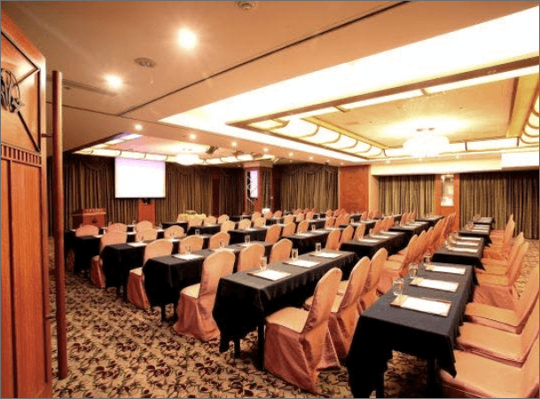
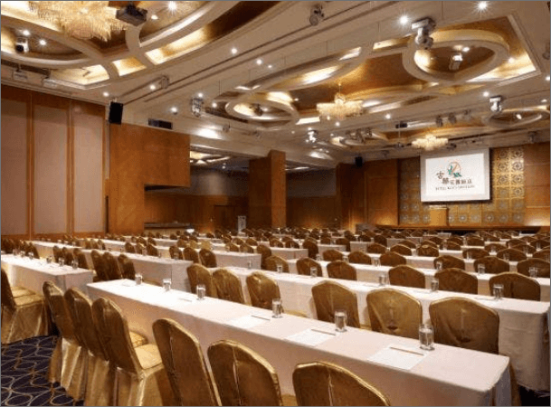

facility & service
設施服務
會議場地

國際宴會廳
挑高7米6的諾大空間，是舉辦傳統中式婚宴的最佳場地，西式婚宴或小型派對可安排於宴會廳獨立包廂舉行。爲新人提供全面性的婚宴服務，從迎娶、婚宴到安排蜜月客房都照顧周到，同時飯店也樂於爲參加婚宴的親屬和客人安排住宿及接送，以及準備結婚蛋糕等服務，確保每對佳偶均可以在大喜日子享受夢寐以求的最佳體驗。
另外，「國際宴會廳」亦適用於產品發表會、大型會報、記者會、餐會或私人婚禮喜宴、壽宴及工商聚會…等，可針對不同場合需求，分隔為以國際1廳、國際2廳命名的多功能會議及宴會場所空間，另還有專業宴會企劃人員，提供您專業建議及彈性配合各式服務需求。
如需服務請洽，訂席中心：(03) 281-3636

桃風宴會廳
桃風宴會廳」是舉辦傳統中式婚宴的最佳場地，西式婚宴或小型派對可安排於宴會廳獨立包廂舉行。爲新人提供全面性的婚宴服務，從迎娶、婚宴到安排蜜月客房都照顧周到，同時飯店也樂於爲參加婚宴的親屬和客人安排住宿及接送，以及準備結婚蛋糕等服務，確保每對佳偶均可以在大喜日子享受夢寐以求的最佳體驗。
另外，「桃風宴會廳」亦適用於產品發表會、大型會報、記者會、餐會或私人婚禮喜宴、壽宴及工商聚會…等，可針對不同場合需求，分隔為以桃、花、舞、春、風命名的多功能會議及宴會空間，另還有專業宴會企劃人員，提供您專業建議及彈性地配合您各式服務需求。
如需服務請洽，訂席中心：(03) 281-3636